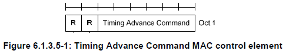

|
LTE Quick Reference Go Back To Index Home : www.sharetechnote.com |
|
|
Timing Advance is a MAC CE that is used to control Uplink signal transmission timing. Network (eNodeB in this case) keep measuring the time difference between PUSCH/PUCCH/SRS reception and the subframe time and can send a 'Timing Advance' command to UE to change the PUSCH/PUCCH transmission to make it better aligned with the subframe timing at the network side. If PUSCH/PUCCH/SRS arrives at the network too early, network send a Timing Advance command to UE saying "Transmit your signal a little bit late", If PUSCH/PUCCH/SRS arrives at the network too late, network send a Timing Advance command to UE saying "Transmit your signal a little bit early".
MAC PDU for Timing Advance is as follows. It is one byte data and the first two bits are reserved and set to be always 0. The remaining 6 bits carries Timing Advance command value ranging from 0 to 63.

Then how to translate each value of TA(Timing Advance) value to physical 'time' delay or advance value. It is described in detail in 36.213 4.2.3 Transmission timing adjustments. Simply put, the UL transmit timing is controlled by following equation.
UL Transmission Time = (UL Transmittion Time for Previous subframe) + (TA value - 31) x 16 samples. , where 1 sample is about 0.033 us and 16 samples is about 0.52 us.
By this calcuation, you can see that the maximum timing change by single TA value (0 or 63) is about 16.7 us (I hope my calculation is right. please let me know if this calculation is wrong).
|